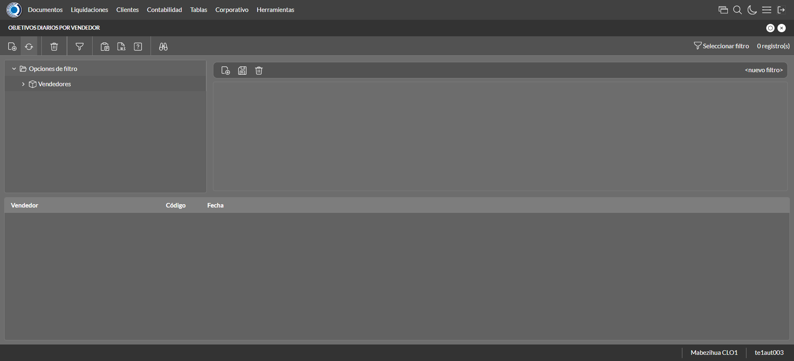
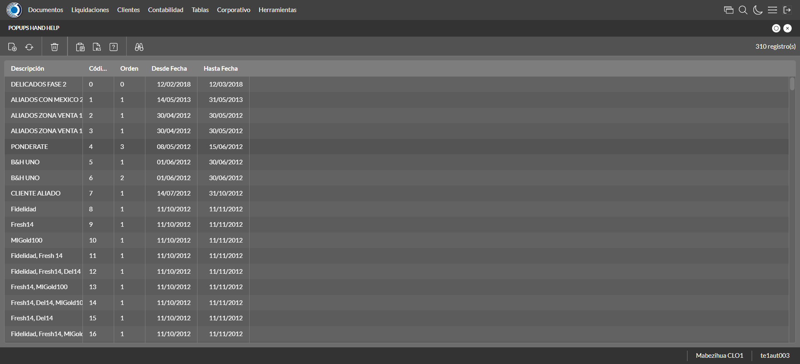
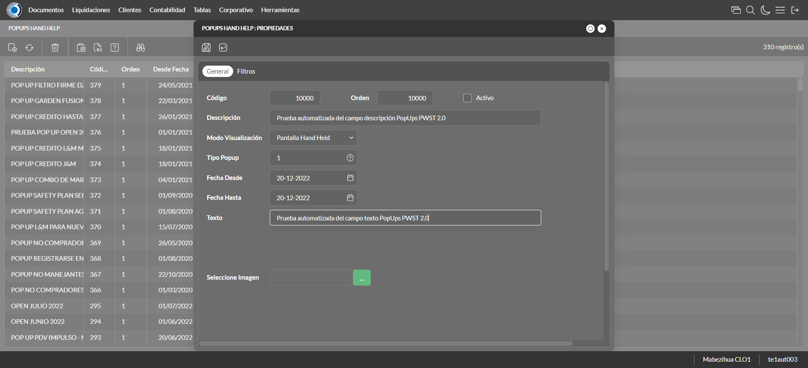
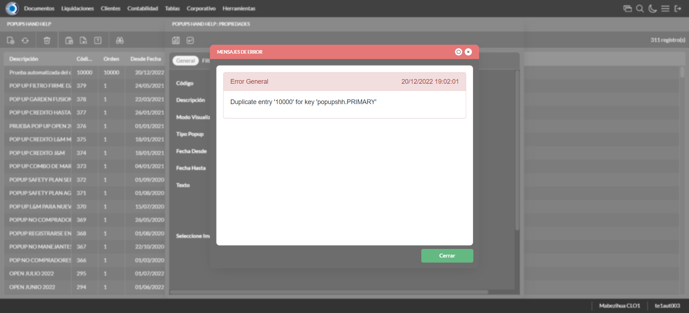
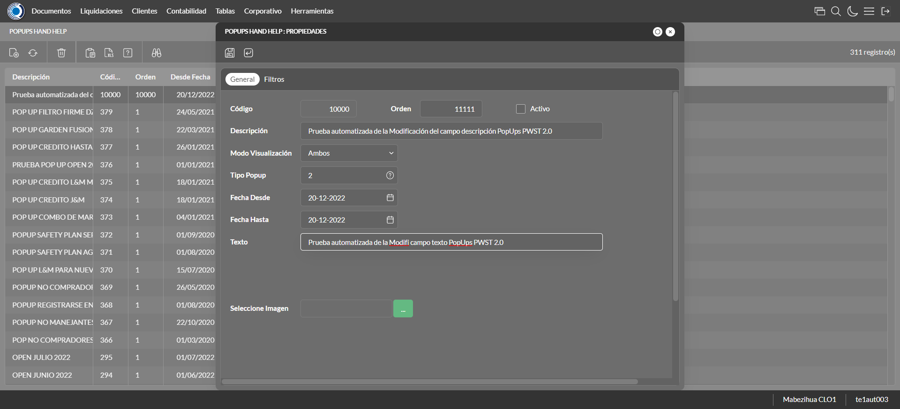
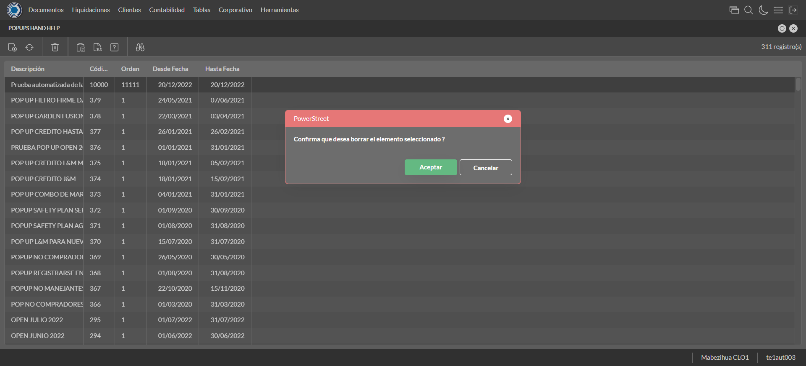

Desarrollado por : Area de Testing PWST
Fecha y hora de inicio : 2022-12-20 13:00:23
Duracion : 0:01:56.659418
Resultado : Total 13，Correctos 7 ，Errores 6 ，Taza de resultado 53.85%
Resumen 53.85% Errores 6 Fallidos 0 Correctos 7 Test realizados 13
| Caso de Prueba | Total | Correctos | Fallido | Error | Detalles | Captura del error |
| ScriptAmarillo.Test: Script Amarillo | 13 | 7 | 0 | 6 | Detalles | |
test |
ft1_1: 2022-12-20 13:00:24,231 - root - INFO - Se abre el chrome
2022-12-20 13:00:25,388 - root - INFO - Entra a la URL
2022-12-20 13:00:25,515 - root - INFO - Maximiza la pantalla
Traceback (most recent call last):
File "C:\Users\jsand\AppData\Local\Programs\Python\Python310\lib\site-packages\selenium-4.4.0-py3.10.egg\selenium\webdriver\remote\switch_to.py", line 87, in frame
frame_reference = self._driver.find_element(By.ID, frame_reference)
File "C:\Users\jsand\AppData\Local\Programs\Python\Python310\lib\site-packages\selenium-4.4.0-py3.10.egg\selenium\webdriver\remote\webdriver.py", line 856, in find_element
return self.execute(Command.FIND_ELEMENT, {
File "C:\Users\jsand\AppData\Local\Programs\Python\Python310\lib\site-packages\selenium-4.4.0-py3.10.egg\selenium\webdriver\remote\webdriver.py", line 434, in execute
self.error_handler.check_response(response)
File "C:\Users\jsand\AppData\Local\Programs\Python\Python310\lib\site-packages\selenium-4.4.0-py3.10.egg\selenium\webdriver\remote\errorhandler.py", line 243, in check_response
raise exception_class(message, screen, stacktrace)
selenium.common.exceptions.NoSuchElementException: Message: no such element: Unable to locate element: {"method":"css selector","selector":"[id="mainFrame"]"}
(Session info: chrome=108.0.5359.125)
Stacktrace:
Backtrace:
(No symbol) [0x008CF243]
(No symbol) [0x00857FD1]
(No symbol) [0x0074D04D]
(No symbol) [0x0077C0B0]
(No symbol) [0x0077C22B]
(No symbol) [0x007AE612]
(No symbol) [0x007985D4]
(No symbol) [0x007AC9EB]
(No symbol) [0x00798386]
(No symbol) [0x0077163C]
(No symbol) [0x0077269D]
GetHandleVerifier [0x00B69A22+2655074]
GetHandleVerifier [0x00B5CA24+2601828]
GetHandleVerifier [0x00978C0A+619850]
GetHandleVerifier [0x00977830+614768]
(No symbol) [0x008605FC]
(No symbol) [0x00865968]
(No symbol) [0x00865A55]
(No symbol) [0x0087051B]
BaseThreadInitThunk [0x76796BD9+25]
RtlGetFullPathName_UEx [0x77B58FD2+1218]
RtlGetFullPathName_UEx [0x77B58F9D+1165]
During handling of the above exception, another exception occurred:
Traceback (most recent call last):
File "C:\Users\jsand\AppData\Local\Programs\Python\Python310\lib\site-packages\selenium-4.4.0-py3.10.egg\selenium\webdriver\remote\switch_to.py", line 90, in frame
frame_reference = self._driver.find_element(By.NAME, frame_reference)
File "C:\Users\jsand\AppData\Local\Programs\Python\Python310\lib\site-packages\selenium-4.4.0-py3.10.egg\selenium\webdriver\remote\webdriver.py", line 856, in find_element
return self.execute(Command.FIND_ELEMENT, {
File "C:\Users\jsand\AppData\Local\Programs\Python\Python310\lib\site-packages\selenium-4.4.0-py3.10.egg\selenium\webdriver\remote\webdriver.py", line 434, in execute
self.error_handler.check_response(response)
File "C:\Users\jsand\AppData\Local\Programs\Python\Python310\lib\site-packages\selenium-4.4.0-py3.10.egg\selenium\webdriver\remote\errorhandler.py", line 243, in check_response
raise exception_class(message, screen, stacktrace)
selenium.common.exceptions.NoSuchElementException: Message: no such element: Unable to locate element: {"method":"css selector","selector":"[name="mainFrame"]"}
(Session info: chrome=108.0.5359.125)
Stacktrace:
Backtrace:
(No symbol) [0x008CF243]
(No symbol) [0x00857FD1]
(No symbol) [0x0074D04D]
(No symbol) [0x0077C0B0]
(No symbol) [0x0077C22B]
(No symbol) [0x007AE612]
(No symbol) [0x007985D4]
(No symbol) [0x007AC9EB]
(No symbol) [0x00798386]
(No symbol) [0x0077163C]
(No symbol) [0x0077269D]
GetHandleVerifier [0x00B69A22+2655074]
GetHandleVerifier [0x00B5CA24+2601828]
GetHandleVerifier [0x00978C0A+619850]
GetHandleVerifier [0x00977830+614768]
(No symbol) [0x008605FC]
(No symbol) [0x00865968]
(No symbol) [0x00865A55]
(No symbol) [0x0087051B]
BaseThreadInitThunk [0x76796BD9+25]
RtlGetFullPathName_UEx [0x77B58FD2+1218]
RtlGetFullPathName_UEx [0x77B58F9D+1165]
During handling of the above exception, another exception occurred:
Traceback (most recent call last):
File "C:\xampp\htdocs\versiones\automatizaciones\AutoPWST\ScriptAmarillo\testCase\ScriptAmarillo.py", line 48, in test
self.driver.switch_to.frame("mainFrame")
File "C:\Users\jsand\AppData\Local\Programs\Python\Python310\lib\site-packages\selenium-4.4.0-py3.10.egg\selenium\webdriver\remote\switch_to.py", line 92, in frame
raise NoSuchFrameException(frame_reference)
selenium.common.exceptions.NoSuchFrameException: Message: mainFrame
|
|
||||
test_000: Ingresa a la base de datos |
pt1_2: 2022-12-20 13:00:28,613 - root - INFO - Escribe el usuario
2022-12-20 13:00:28,682 - root - INFO - Escribe la contraseña
2022-12-20 13:00:28,751 - root - INFO - Se dio clic en el boton ingresar
2022-12-20 13:00:29,446 - root - INFO - Ejecutar Enterprise
2022-12-20 13:00:33,501 - root - INFO - Cambia entre pestañas
|
|
||||
test_001: Ingresa a pantalla Objetivos Diarios |
ft1_3: 2022-12-20 13:00:44,250 - root - INFO - Abre la pantalla de Objetivos Diarios
2022-12-20 13:00:44,825 - root - INFO - La pantalla ejecutada es Lista de precios.
2022-12-20 13:00:44,832 - root - INFO - Captura: C:\xampp\htdocs\versiones\automatizaciones\AutoPWST\ScriptAmarillo\report\img screen：20221220_13_00_44.png
2022-12-20 13:00:45,018 - root - INFO - Se presiona el boton 'Refrescar', para crear un nuevo registro igual al anterior.
2022-12-20 13:00:55,509 - root - ERROR - No se encontró el botón Nuevo, revise si el xpath sigue siendo el mismo, para mas detalles del error consulte el reporte
2022-12-20 13:00:55,512 - root - INFO - Captura: C:\xampp\htdocs\versiones\automatizaciones\AutoPWST\ScriptAmarillo\report\img screen：20221220_13_00_55.png
2022-12-20 13:01:36,334 - root - INFO - Se presiona el boton 'Cerrar', para cerrar la pantalla.
Traceback (most recent call last):
File "C:\xampp\htdocs\versiones\automatizaciones\AutoPWST\ScriptAmarillo\testCase\ScriptAmarillo.py", line 104, in test_001
raise Exception()
Exception
|
 | ||||
test_002: Agregar Objetivos Diarios |
ft1_4: 2022-12-20 13:01:36,337 - root - ERROR - La pantalla anterior fallo por lo que esta no funcionara, para mas detalles del error consulte el reporte
Traceback (most recent call last):
File "C:\xampp\htdocs\versiones\automatizaciones\AutoPWST\ScriptAmarillo\testCase\ScriptAmarillo.py", line 160, in test_002
raise Exception()
Exception
|
|
||||
test_003: Modifica Modelos de liquidación |
ft1_5: 2022-12-20 13:01:36,337 - root - ERROR - La pantalla anterior fallo por lo que esta no funcionara, para mas detalles del error consulte el reporte
Traceback (most recent call last):
File "C:\xampp\htdocs\versiones\automatizaciones\AutoPWST\ScriptAmarillo\testCase\ScriptAmarillo.py", line 213, in test_003
raise Exception()
Exception
|
|
||||
test_004: Modifica Modelos de liquidación |
ft1_6: 2022-12-20 13:01:36,338 - root - ERROR - La pantalla anterior fallo por lo que esta no funcionara, para mas detalles del error consulte el reporte
Traceback (most recent call last):
File "C:\xampp\htdocs\versiones\automatizaciones\AutoPWST\ScriptAmarillo\testCase\ScriptAmarillo.py", line 266, in test_004
raise Exception()
Exception
|
|
||||
test_005: Elimina Modelos de liquidación |
ft1_7: 2022-12-20 13:01:36,339 - root - ERROR - La pantalla anterior fallo por lo que esta no funcionara, para mas detalles del error consulte el reporte
Traceback (most recent call last):
File "C:\xampp\htdocs\versiones\automatizaciones\AutoPWST\ScriptAmarillo\testCase\ScriptAmarillo.py", line 319, in test_005
raise Exception()
Exception
|
|
||||
test_006: Ingresa a pantalla Pop Ups |
pt1_8: 2022-12-20 13:01:37,220 - root - INFO - Abre la pantalla de PopUps
2022-12-20 13:01:37,815 - root - INFO - La pantalla ejecutada es PopUps.
2022-12-20 13:01:38,828 - root - INFO - Captura: C:\xampp\htdocs\versiones\automatizaciones\AutoPWST\ScriptAmarillo\report\img screen：20221220_13_01_38.png
2022-12-20 13:01:40,154 - root - INFO - Se ordenó por codigo.
2022-12-20 13:01:50,706 - root - INFO - Se presiona el boton 'Nuevo', para crear un nuevo registro.
|
 | ||||
test_007: Agregar Pop Ups |
pt1_9: 2022-12-20 13:01:51,262 - root - INFO - Se abrio la pantalla para el ingreso de un registro nuevo.
2022-12-20 13:01:51,307 - root - INFO - El campo 'Codigo' si se encuentra visible.
2022-12-20 13:01:51,340 - root - INFO - El campo 'Orden' si se encuentra visible.
2022-12-20 13:01:51,370 - root - INFO - El campo 'Activo' si se encuentra visible.
2022-12-20 13:01:51,400 - root - INFO - El campo 'Descrición' si se encuentra visible.
2022-12-20 13:01:51,434 - root - INFO - El campo 'Modo Visualización' si se encuentra visible.
2022-12-20 13:01:51,466 - root - INFO - El campo 'Tipo Popup' si se encuentra visible.
2022-12-20 13:01:51,497 - root - INFO - El campo 'Fecha Desde' si se encuentra visible.
2022-12-20 13:01:51,546 - root - INFO - El campo 'Fecha Hasta' si se encuentra visible.
2022-12-20 13:01:51,578 - root - INFO - El campo 'Texto' si se encuentra visible.
2022-12-20 13:01:51,608 - root - INFO - El campo 'Seleccione Imagen' si se encuentra visible.
2022-12-20 13:01:51,656 - root - INFO - Ingresa el codigo del nuevo registro
2022-12-20 13:01:51,718 - root - INFO - Ingresa la orden del nuevo registro
2022-12-20 13:01:52,834 - root - INFO - Hizo click en el checkbox Activo
2022-12-20 13:01:52,990 - root - INFO - Ingresa la descripción del nuevo registro
2022-12-20 13:01:53,390 - root - INFO - Se dió click en la opción Pantalla Held.
2022-12-20 13:01:54,645 - root - INFO - Se dió doble click en el registro de Tipo Pop Up.
2022-12-20 13:01:54,886 - root - INFO - Ingresa el texto del nuevo registro
2022-12-20 13:01:55,887 - root - INFO - Captura: C:\xampp\htdocs\versiones\automatizaciones\AutoPWST\ScriptAmarillo\report\img screen：20221220_13_01_55.png
2022-12-20 13:01:56,109 - root - INFO - Se da clic en el boton Guardar; se debe crear un nuevo registro.
|
 | ||||
test_009: Modifica Pop Ups |
pt1_10: 2022-12-20 13:01:56,396 - root - INFO - Se presiona el boton 'Refrescar', para crear un nuevo registro igual al anterior.
2022-12-20 13:01:56,987 - root - INFO - Se presiona el boton 'Nuevo', para crear un nuevo registro igual al anterior.
2022-12-20 13:01:57,537 - root - INFO - Se abrio la pantalla para el ingreso de un registro nuevo.
2022-12-20 13:01:57,565 - root - INFO - El campo 'Codigo' si se encuentra visible.
2022-12-20 13:01:57,592 - root - INFO - El campo 'Orden' si se encuentra visible.
2022-12-20 13:01:57,617 - root - INFO - El campo 'Activo' si se encuentra visible.
2022-12-20 13:01:57,643 - root - INFO - El campo 'Descrición' si se encuentra visible.
2022-12-20 13:01:57,703 - root - INFO - El campo 'Modo Visualización' si se encuentra visible.
2022-12-20 13:01:57,734 - root - INFO - El campo 'Tipo Popup' si se encuentra visible.
2022-12-20 13:01:57,762 - root - INFO - El campo 'Fecha Desde' si se encuentra visible.
2022-12-20 13:01:57,793 - root - INFO - El campo 'Fecha Hasta' si se encuentra visible.
2022-12-20 13:01:57,822 - root - INFO - El campo 'Texto' si se encuentra visible.
2022-12-20 13:01:57,852 - root - INFO - El campo 'Seleccione Imagen' si se encuentra visible.
2022-12-20 13:01:57,897 - root - INFO - Ingresa el codigo del nuevo registro
2022-12-20 13:01:57,972 - root - INFO - Ingresa la orden del nuevo registro
2022-12-20 13:01:59,076 - root - INFO - Hizo click en el checkbox Activo
2022-12-20 13:01:59,230 - root - INFO - Ingresa la descripción del nuevo registro
2022-12-20 13:01:59,588 - root - INFO - Se dió click en la opción Pantalla Hand Held.
2022-12-20 13:02:00,780 - root - INFO - Se dió doble click en el registro de Tipo PopUp.
2022-12-20 13:02:00,946 - root - INFO - Ingresa el texto del nuevo registro
2022-12-20 13:02:01,066 - root - INFO - Se da clic en el boton Guardar; NO se debe crear un nuevo registro.
2022-12-20 13:02:02,074 - root - INFO - Captura: C:\xampp\htdocs\versiones\automatizaciones\AutoPWST\ScriptAmarillo\report\img screen：20221220_13_02_02.png
2022-12-20 13:02:02,383 - root - INFO - Se presiona el boton 'Cerrar', para cerrar el mensaje de duplicidad de llave primaria
2022-12-20 13:02:02,465 - root - INFO - Se presiona el boton 'Cerrar', para cerrar la ventana
|
 | ||||
test_010: Modifica Modelos de liquidación |
pt1_11: 2022-12-20 13:02:02,595 - root - INFO - Se presiona el boton 'Refrescar', para proceder a modificar el registro.
2022-12-20 13:02:04,278 - root - INFO - Se dió dos veces click en el encabezado para modificar el orden de los registros.
2022-12-20 13:02:06,480 - root - INFO - Se da clic en el registro creado, para proceder a modificarlo.
2022-12-20 13:02:07,128 - root - INFO - Se modifica el contenido del campo Orden
2022-12-20 13:02:08,237 - root - INFO - Hizo click en el checkbox activo
2022-12-20 13:02:08,395 - root - INFO - Se modifica el contenido del campo Descripción
2022-12-20 13:02:08,783 - root - INFO - Se dió click en la opción Ambos.
2022-12-20 13:02:09,693 - root - INFO - Se dió doble click en el registro de Tipo PopUp.
2022-12-20 13:02:09,867 - root - INFO - Se modifica el contenido del campo Texto
2022-12-20 13:02:10,874 - root - INFO - Captura: C:\xampp\htdocs\versiones\automatizaciones\AutoPWST\ScriptAmarillo\report\img screen：20221220_13_02_10.png
2022-12-20 13:02:11,098 - root - INFO - Se da clic en el boton Guardar; se debe modificar la informacion del registro.
|
 | ||||
test_011: Elimina Modelos de liquidación |
pt1_12: 2022-12-20 13:02:11,336 - root - INFO - Se presiona el boton 'Refrescar', para proceder a eliminar el registro.
2022-12-20 13:02:12,949 - root - INFO - Se da clic en el registro creado, para proceder a eliminarlo.
2022-12-20 13:02:14,028 - root - INFO - Se presiona el boton 'Eliminar', para eliminar el registro.
2022-12-20 13:02:14,029 - root - INFO - Captura: C:\xampp\htdocs\versiones\automatizaciones\AutoPWST\ScriptAmarillo\report\img screen：20221220_13_02_14.png
2022-12-20 13:02:14,235 - root - INFO - Se confirma el eliminado del registro
2022-12-20 13:02:14,825 - root - INFO - Se presiona el boton 'Refrescar', para veriicar si el registro ha sido eliminado.
2022-12-20 13:02:15,460 - root - INFO - Se presiona el boton 'Cerrar', para cerrar la pantalla de Pop Ups.
|
 | ||||
test_012: Cerrar_Navegador |
pt1_13: 2022-12-20 13:02:19,733 - root - INFO - Se cierra chrome
|
|
||||
| Caso de prueba | 13 | 7 | 0 | 6 | Taza de resultado：53.85% | |